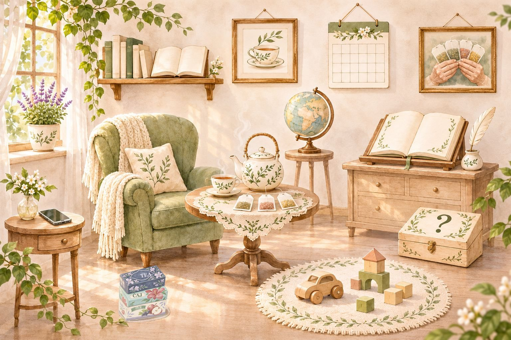

Čajové drobnosti
Posaďte sa, nalejte si čaj a rozhliadnite sa po izbe. Niektoré veci v nej skrývajú zaujímavosti – stačí na ne kliknúť.

Obraz so šálkou – citáty o čaji Kalendár – čajový kalendár Kvetina – rastliny v čaji Hračky – hry s prázdnymi obalmi Krabičky od čaju pri kresle – krabičky, ktoré stoja za povšimnutieV izbe nájdete
- Citáty o čaji – obraz so šálkou
- Čajový kalendár – kalendár na stene
- Rastliny v čaji – kvetina na okne
- Hry s prázdnymi obalmi – hračky na koberci
- Krabičky – krabičky od čaju pri kresle
Ďalšie veci v izbe sa postupne prebúdzajú: knihy o čaji, hádanky, mapa krajín, odkiaľ mám vrecúška, a kniha návštev.
Ilustrácia vytvorená pomocou umelej inteligencie podľa náčrtu autora zbierky.